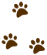
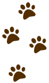
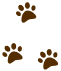
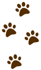
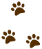
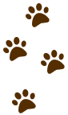
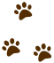
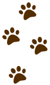
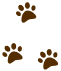
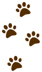

 
Continue com o Cadastro
Dados Iniciais
Histórico do Pet
Confirmação
Tomou a vacina da raiva nos últimos 12 meses?
Sim
Não
Usou remédio contra pulga e carrapatos nos últimos 6 meses?
Sim
Não
Foi vermifugado nos últimos 6 meses?
Sim
Não
Tomou alguma das vacinas contra doenças?
Sim
Não
Já fez algum procedimento cirúrgico?
Sim
Não
Último Peso:
Observações:
 



 


